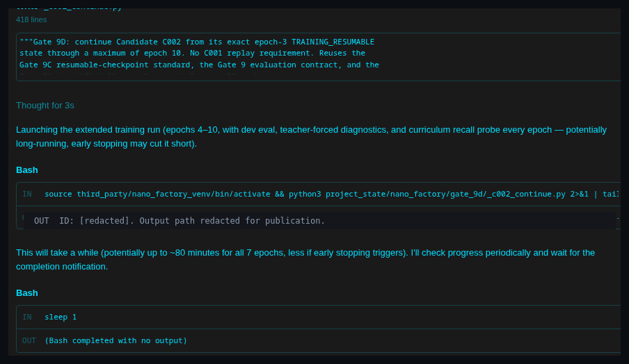
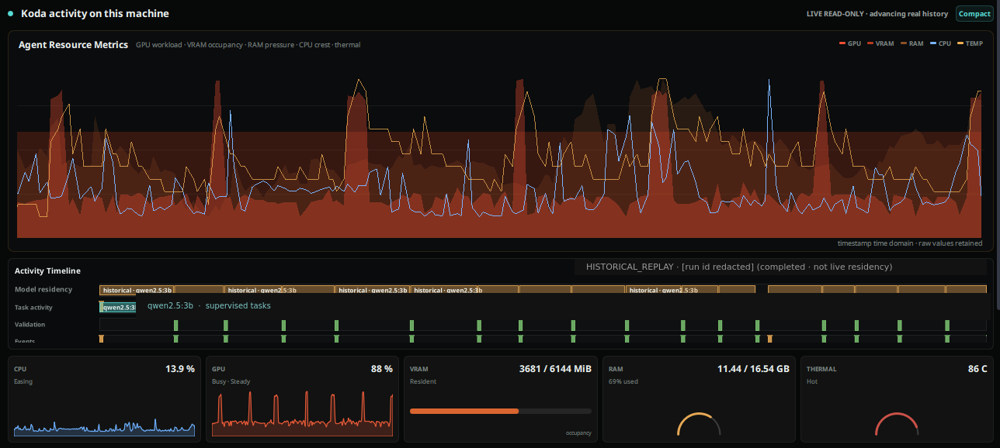
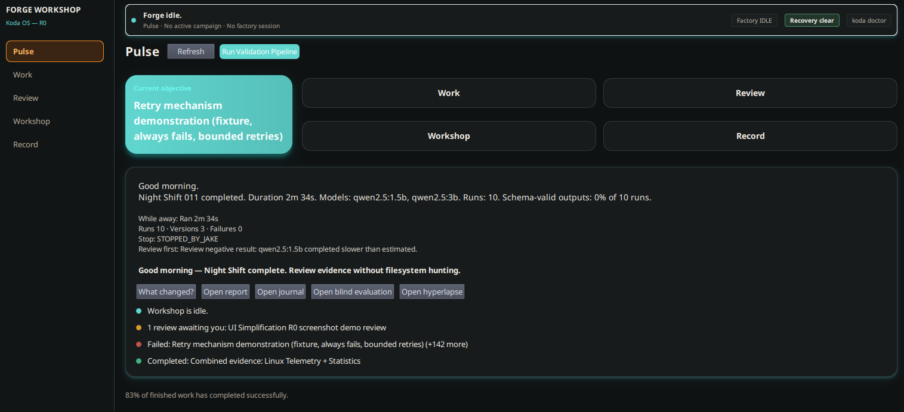

There is a particular theatre reserved for people who build alone. From the outside it looks romantic: one mind, one stack, one unbroken line from idea to shipped artefact. From the inside it often looks like a banquet at which you are both host and main course. You plate the work. You carve the work. You also, somehow, are the work. The knife is in your hand either way.
This issue is about refusing that dinner—not by becoming less ambitious, but by becoming more deliberate. Solo development is not a moral failing and it is not a badge of honour. It is a constrained organisational design problem. Treat it as one.
01The One-Person Department
A solo builder inherits every organisational role that a company would otherwise distribute. Product sense. Engineering. Interface judgement. Research. Support. Bookkeeping of truths. The calendar of unfinished promises. The midnight triage when something breaks in production and the only on-call rota is the mirror.
The inconvenience is not that one person can wear many hats. The inconvenience is mistaking that temporary costume change for a sustainable identity. Hats stack until they become a helmet—and helmets are excellent for survival, dreadful for peripheral vision.
Name the departments you are presently inhabiting. Write them down where you can see them. Strategy is not the same as implementation. Design exploration is not the same as bugfix. Evidence gathering is not the same as shipping theatre. When the roles collapse into a single urgent blur, you lose the ability to sequence them. Sequencing is the first dignity of solo practice.
Hats stack until they become a helmet—and helmets are excellent for survival, dreadful for peripheral vision.
02You Are Not the Workforce
Labour can be multiplied. Judgement usually cannot—at least not without governance. This distinction matters more now that AI agents can draft, refactor, search, summarise, open pull requests, and politely invent confidence.
An agent is workforce of a kind: fast, tireless, occasionally wrong with exquisite fluency. Used well, it extends throughput. Used carelessly, it extends the radius of your mistakes. The solo developer who treats every model output as an employee without a manager has not hired help; they have automated the production of unfinished liabilities.
You are not the workforce. You are the person who decides what labour is permitted to touch, what evidence is required before merge, and which trade-offs remain yours even when someone else—or something else—typed the code. Founder judgement is the scarce resource. Protect it as you would protect a key signing ceremony.
In practice this looks unglamorous. Explicit acceptance criteria before a long agent run. A short list of invariants that must still hold after the run. A ritual of reading the diff as an auditor, not as a grateful recipient of free productivity. The point is not distrust of tools. The point is to refuse to confuse speed with completed thought.
03Delegate Labour, Not Authority
Delegation fails in solo work for a predictable reason: people delegate decisions when they meant to delegate chores. Chores are valuable. Decisions are the business.
Delegate transcription, scaffolding, migration drafts, research digests, test generation under supervision, documentation first passes, packaging, and the dull mechanical work of making yesterday’s notes into today’s checklist. Keep authority over problem framing, architectural commitments, user-facing promises, security posture, and the order in which unfinished work becomes public truth.
Handovers are the handshake of that arrangement. A good handover is boring on purpose: context, constraints, current evidence, known unknowns, definition of done, and the exact question the labour is meant to answer. Whether the recipient is a contractor, a collaborator, or an AI agent, the form is the same. Vague prompts produce vague ownership—and vague ownership always returns to your desk wearing a happier costume.
A good handover is boring on purpose: context, constraints, evidence, unknowns, and the question labour is meant to answer. Editorial margin
Workshop Figure 01 · Delegate
Supervised AI Work

04External Memory Beats Heroic Stamina
Heroism is a poor substitute for paper. The solo developer who keeps the critical path in their head invents a single point of failure with excellent social skills. Sleep, travel, illness, and a single hard afternoon can erase a week’s coherence if the only repository of intent is neural and tired.
External memory is not bureaucracy for its own sake. It is the practice of making state inspectable: decision logs that record why a path was chosen, runbooks that survive the next you, issue notes that capture evidence rather than vibes, checklists that make governance repeatable when attention is scarce. Systems—version control, typed interfaces, reproducible builds, staged environments—are also external memory. They remember what you meant when you are busy becoming someone else’s firefight.
Teams inside larger companies pay for this with process theatre. Solo builders can pay with proportion instead: the minimum durable record that lets work resume without archaeology. If you cannot hand a stranger—or tomorrow’s you—a coherent brief, you do not yet have a system. You have a streak.
At YewForge, some of the more reliable weeks have come not from louder effort but from clearer ledgers: what is sealed, what is provisional, what requires a human signature before it may pretend to be done. The brand name matters less than the habit. Gravity belongs to the record, not the mood.
05Momentum Can Disguise Chaos
Shipping feels like health. Sometimes it is. Sometimes it is a high heart rate mistaken for fitness. Momentum without sequencing produces a portfolio of almosts: features that nearly land, refactors that nearly finish, experiments that nearly teach something because nobody wrote what would count as learning.
Chaos loves a calendar of green checkmarks. Ask sharper questions. What evidence would falsify this approach? What is the smallest reversible step? What must remain true after this change? Who or what will notice if it is wrong? If those questions feel inconvenient, that is the publication living up to its name.
Governance, for a solo practice, need not mean committees. It can mean a personal constitution of three or four non-negotiables: no merge without a stated risk; no “temporary” production exemption without an expiry; no agent autonomy beyond a sandbox without a human reading the boundary. Constitutions are quieter than panic and cheaper than apologising in public.
Workshop Figure 02 · Observe
Activity Timeline (built during the Koda working-name period; now Nivren OS)

06Build the Workshop, Not Just the Product
Products expire into versions. Workshops compound. The workshop is how you open a day without rediscovering your own methods: local preview that is boringly reliable, scripts that encode rituals, folders that mean what they say, recovery paths rehearsed before they are needed, a publication like this one if writing is how you think in public without performing product marketing.
Solo builders often underinvest in the workshop because it does not demo well. That is precisely why it matters. A product can be rebuilt. A missing workshop forces every rebuild to rebuy the same confusion at full price. Prefer tools and habits that reduce cognitive switching: one place for decisions, one place for experiments, one place for sealed work, one path back to a known-good state.
AI agents belong in the workshop as apparatus, not as proprietors. Give them scoped benches, explicit materials, and a clean way to return finished labour for inspection. Do not give them the keys to the front door and a poetry of encouragement. The workshop is yours; the labour is invited.
A product can be rebuilt. A missing workshop forces every rebuild to rebuy the same confusion at full price.
Workshop Figure 03 · Review
Forge Workshop — Pulse

07The Plate Is Optional
The cover of this issue is a joke with good manners and a serious digestive system. The head on the plate is what happens when identity collapses into output: you become the deliverable. Admirable for a week. Catastrophic as a doctrine.
You can put the cutlery down. Declining the self-as-meal posture does not mean declining responsibility. It means designing a practice in which labour is delegated with handovers, judgement is retained with governance, memory lives outside the skull, sequencing outranks adrenaline, and the workshop improves even on days the product does not. AI can help with the plates. It should never decide the menu alone.
Solo development, done well, is orchestration under constraint. You conduct. You do not audition for every instrument in the same evening and call the resulting noise integrity. The inconvenient truth is almost always kind: fewer simultaneous roles, clearer evidence, slower false momentum, sharper authority.
“The objective is not to keep every plate spinning. It is to build a table that no longer requires you to hold it up.”